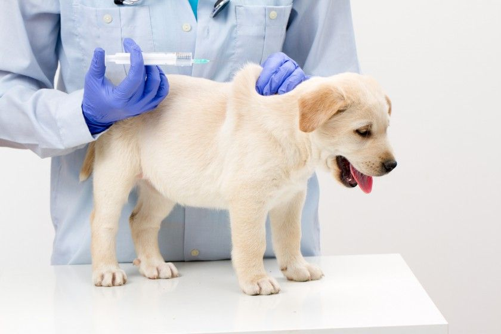
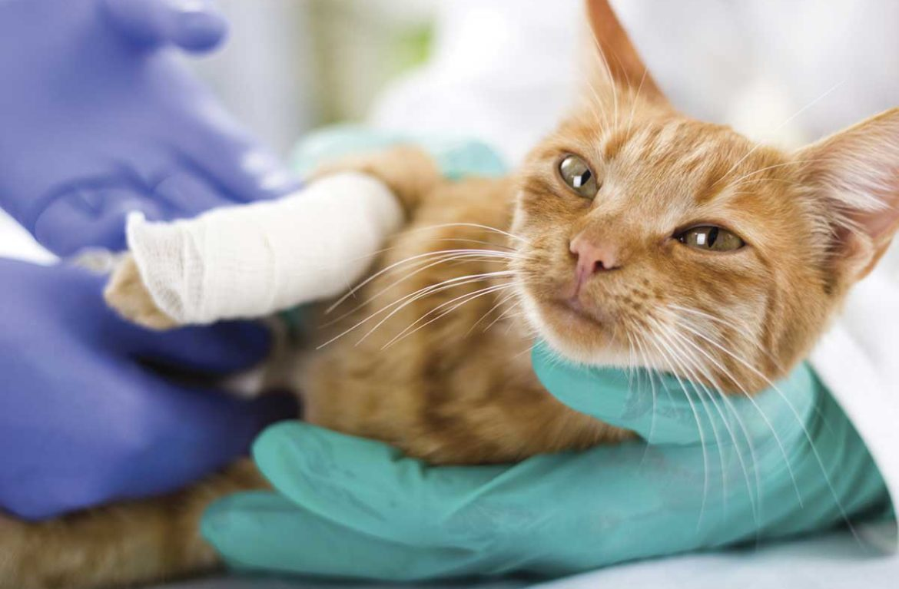
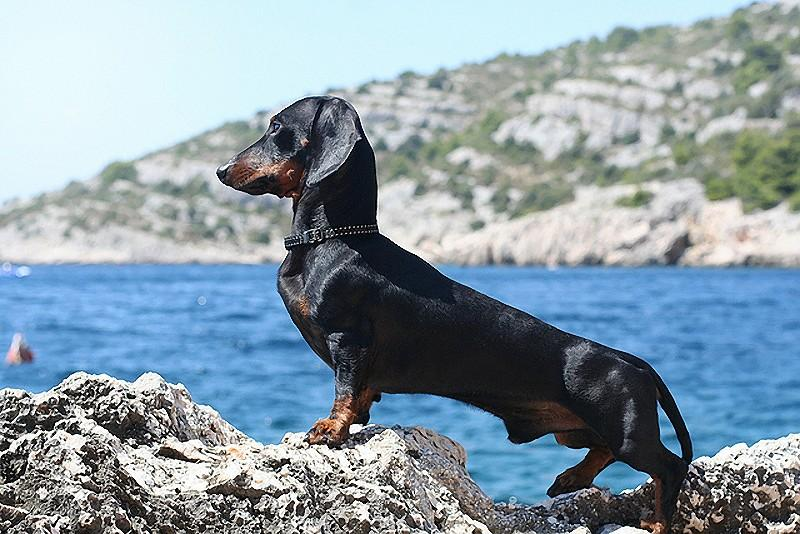
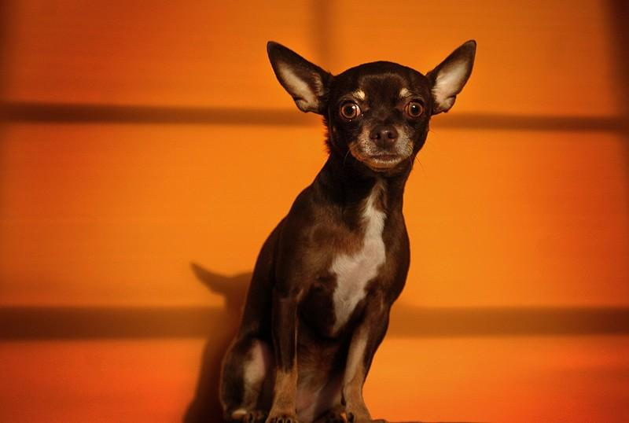
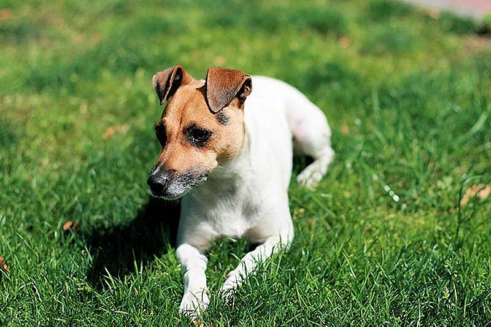

ЩЕПЛЕННЯ ВІД СКАЗУ.
Від народження до року. Профілактичні заходи у цуценят можна розділити на 2 блоки: попередження інфекційних захворювань та протипаразитарні обробки. До основних інфекцій, які обов'язково необхідно профілактувати, належить чума м'ясоїдних, парвовіроз, аденовіроз (інфекційний гепатит та інфекція дихальних шляхів), парагрип собак, лептоспіроз та сказ. Крім того, для більш повного захисту від інфекцій шлунково-кишкового тракту можна застосовувати вакцинацію проти коронавірозу собак. Час початку вакцинації залежить від факторів ризику зараження, імовірного імунологічного статусу цуценят (якою вакциною і коли була щеплена сука, чи цуценята отримали молозиво) та особливостей застосування конкретної вакцини. З 3-х місячного віку рекомендована вакцинація проти сказу. «Зоетіс» має в своєму арсеналі вакцину Дефенсор 3, яка є безпечною, високоефективною (забезпечує високий рівень антитіл проти сказу) та безболісною при введенні.
Після 1 року. Собаки після року також можуть бути вразливими до інфекцій: незалежно від віку є загроза сказу, лептоспірозу, інфекцій дихальних шляхів, а в разі ураження імунологічного статусу тварини можливе захворювання на чуму та парвовіроз. Тому рекомендована щорічна вакцинація проти цих інфекцій, наприклад, вакцинами Вангард Плюс та Дурамун Плюс. Також необхідно щорічно (згідно з законодавством України) вакцинувати собак проти сказу (наприклад, вакциною Дефенсор 3). Якщо пес є активним учасником виставок, змагань, має багато контактів з іншими собаками під час прогулянок, можна порекомендувати також додаткову вакцинацію проти бордетельозу (Bordetella bronchiseptica – один із збудників кашлю розплідників).
ТРАВМИ ДОМАШНІХ ТВАРИН.
Автомобілісти, які не дотримуються правил дорожнього руху, зимова ожеледиця, шкідлива випадкова їжа, жорстокість з боку незнайомих людей і інших агресивних тварин, погана екологія, попадання сторонніх предметів всередину можуть призвести до появи травми у тварин. У результаті падіння або нещасного випадку найчастіше є загроза: пошкодження зв’язок; вивихів суглобів; переломів лап, щелепи, черепно-мозкової травми, хребта; пошкодження зору; появи вушних травм і носової кровотечі; виникнення опіків, обмороження, задухи; появи конвульсій.
АГРЕСИВНІ СОБАКИ:
ТАКСА.
Сюрприз! Згідно з нещодавно проведеним дослідженням, ця невелика норна собака була визнана найбільш агресивної породою в світі. І не дивлячись на те, що такса не може завдати серйозної шкоди людині, як би сильно не кусала, цей маленький монстр відомий своєю ненавистю до незнайомців. Як виявилося, одна з 5 такс хоч раз в житті покусала незнайомця, а одна з 12 - нападала на власного господаря.
ЧИХУАХУА.
На другому місці знаходиться ще одна порода, яку навряд чи хтось може сприймати серйозно. Коли справа доходить до агресивності, мало хто з собаки можуть перевершити чихуахуа. Насправді, з більшою ймовірністю вас вкусить чихуахуа, ніж доберман!
ДЖЕК-РФССЕЛ-ТЕРЬЕТ.
Маленькі породи свій невеликий розмір компенсують агресивністю. Джек-рассел-тер'єр це ... тер'єр і цим все сказано: тер'єри взагалі не терплять грубого поводження і будуть відчайдушно опиратися. Тому стежте за дітьми, які можуть досить брутально грати з чотириногими вихованцями.